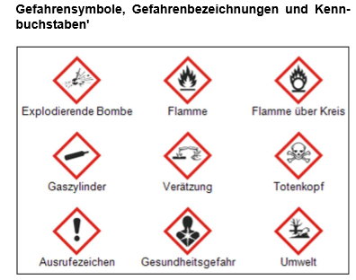

1 · Warum diese Belehrung?
In den Fachräumen für Biologie, Chemie, Physik, Werken, Technik und im Fotolabor wird mit Geräten, Chemikalien und teils gefährlichen Stoffen gearbeitet. Deshalb gilt: Diese Fachräume dürfen nicht ohne Aufsicht der Lehrerin oder des Lehrers betreten werden.
Wird euch persönliche Schutzausrüstung ausgehändigt (z. B. Schutzbrille, Schutzhandschuhe), muss sie beim Experimentieren auch benutzt werden.
💡 Tipp
2 · Gefahrensymbole erkennen
Gefahrstoffe werden mit genormten Gefahrensymbolen gekennzeichnet. Schau dir die neun Symbole genau an und ordne dann jedem Symbolnamen die passende Bedeutung zu.

💡 Tipp
Antippen-Prinzip: links Symbolname antippen, dann rechts die passende Bedeutung antippen. Zusammengehörige Paare bekommen dieselbe Nummer, damit die Zuordnung sichtbar bleibt.
3 · Verhaltensregeln im Fachraum
Ordne jede Aussage der passenden Kategorie zu: Verboten oder Erlaubt/Pflicht.
💡 Tipp
🚫 Verboten
✅ Erlaubt / Pflicht
4 · Reinigung und Entsorgung
Chemikalien dürfen grundsätzlich nicht in den Ausguss gegossen werden. Gefahrstoffe und deren Reste werden gesammelt und fachgerecht entsorgt. Auf mögliche Abweichungen von dieser Regel weist die Lehrkraft ausdrücklich hin.
5 · Verhalten im Gefahrfall
Tippe nacheinander auf „Nächster Schritt“, um die Vorgehensweise bei einem Gefahrstoffunfall kennenzulernen.
6 · Erste Hilfe & Notrufnummern
Tippe eine Karte an, um die Notrufnummer aufzudecken. Präge sie dir gut ein.